Drei Szenen, die scheinbar zunächst nichts miteinander zu tun haben: Ein deutsches Landessozialgericht erstickt unter KI-generierten Klageschriften. Die koreanischen Exportpreise für Speicherchips haben sich gegenüber dem Vorjahr in einzelnen Kategorien mehr als verfünffacht. Und in unserem KI-Startup ist das Code-Review zum eigentlichen Engpass der Softwareentwicklung geworden. Drei Erscheinungsformen desselben Problems. Dieser Artikel stellt ein Framework vor, mit dem sich die Bottlenecks antizipieren lassen, die der rasante KI-Fortschritt erzeugt. Wo entstehen sie? Warum tauchen sie auf? Und wie erkennt man die nächsten Bottlenecks rechtzeitig?
Übersetzt aus dem englischen Original.
1. Zwei Szenen
Szene A: Eine Pressekonferenz in Essen
Auf seiner Jahrespressekonferenz im April 2026 vermeldete das Landessozialgericht Nordrhein-Westfalen für seine acht Sozialgerichte 7.615 Eilverfahren im Jahr 2025, ein Sprung um 55 Prozent binnen eines Jahres. Reguläre Verfahren warten inzwischen 15,6 Monate auf eine Entscheidung.[1]
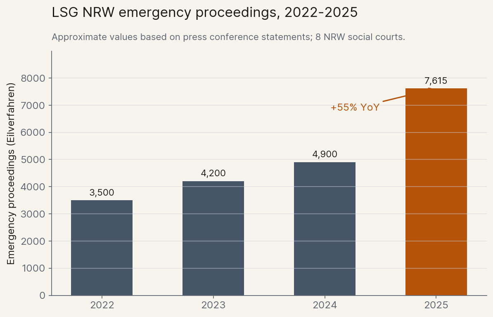
Das Gericht benannte die Ursache offen: KI-generierte Klageschriften. Die Schriftsätze, so die Gerichtspräsidentin, seien „oft sehr lang, mit einer Vielzahl von oft nicht zielgerichteten Anträgen und Verweisen auf Rechtsprechung, die es teilweise gar nicht gibt“. Und das ist erst der Beginn. Heute kommen die Eingaben überwiegend von juristischen Laien, die ChatGPT mit einem einfachen Prompt gefragt haben. Die Entwicklung ist jetzt schon dramatisch, lange bevor KI-Agenten die breite Öffentlichkeit erreicht haben. Die Richter ertrinken in Texten, deren Produktion fast nichts kostet und die dennoch Zeile für Zeile gelesen werden müssen. Und die Kurve der Anzahl der Klageeingänge hat gerade erst angefangen, noch steiler zu werden.
Szene B: Ein Montagmorgen in Bremen
Eine kleinere Version derselben Geschichte spielt sich in unserem eigenen Unternehmen ab. ellamind baut und evaluiert KI-Agenten für Unternehmenskunden. Nachdem Anthropic Ende 2025 Claude Opus 4.5 veröffentlicht hatte, sprang die Fähigkeit unserer Entwickler, neuen Code zu schreiben, dramatisch an. Binnen weniger Wochen lagen mehr als 50 fertige Code-Beiträge im Review-Stau, etwa das Fünffache dessen, was wir vor Opus 4.5 kannten. Und nicht genug Senior-Entwickler, um alle zeitnah zu prüfen …
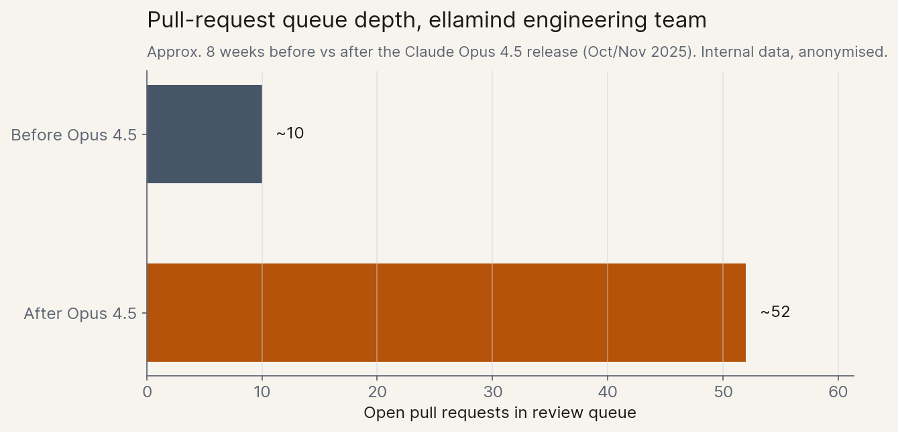
Das Review eines nicht-trivialen Code-Beitrags lässt sich nicht parallelisieren. Ein Reviewer muss die bestehende Codebasis kennen, das Ziel und die technischen Methoden der Änderung verstehen und unbedachte Nebeneffekte erkennen. Er muss beurteilen, ob die Testabdeckung ausreichend und die Tests zielführend sind. Und er muss die Verantwortung für Code tragen, der in Produktion geht. Nichts davon geht schneller, wenn die Code-Erstellung schneller wird und die Anzahl der Code-Reviewer lässt sich nicht auf Knopfdruck skalieren.
Das Bottleneck verschwand nicht, als die KI besser darin wurde, Code zu schreiben. Es wanderte einen Schritt weiter und verlagerte sich vom „Code schreiben“ zum „Code überprüfen“.
Dasselbe Muster
Ein Sozialrichter in Essen und ein Code-Reviewer in Bremen sind zwei Seiten derselben Medaille. Ein neues Tool hat die Kosten für die Produktion einer bestimmten Art von Dokument nahe an null gedrückt, während die Kosten für das Lesen, Bewerten und Verifizieren dieser Dokumente kaum gesunken sind. Menschen, deren Arbeit hauptsächlich aus letzterem besteht, erleben hautnah (aber in unterschiedlicher Geschwindigkeit), wie sich durch KI gigantische Bottlenecks in verschiedensten Prozessen bilden.
Je schneller die KI im Produzieren von Outputs wird, desto härter wird es für diejenigen, die diese Outputs prüfen müssen. Das Muster ist überall sichtbar, sobald man es einmal gesehen hat. Und es ist die natürliche Fortsetzung des Bildes, das ich vor zwei Monaten in A Country Full of Geniuses gezeichnet habe: Sobald das „Country Full of Geniuses in a Datacenter“ absehbar ist, sind die Bottlenecks im Rest der Gesellschaft und Wirtschaft das, worüber wir als Nächstes nachdenken müssen.
2. Die langsamste Uhr
Das einflussreichste Bild davon, was mächtige KI leistet, stammt von Dario Amodei: das „komprimierte 21. Jahrhundert“ aus Machines of Loving Grace (Oktober 2024). Intelligenz, so das Bild, sei zunächst stark durch die anderen Produktionsfaktoren gebremst, finde mit der Zeit aber Wege um sie herum. Compute, Kapital, Talent, Research, Regulierung: Auf lange Sicht findet ein hinreichend fähiges System einen Pfad durch jede dieser Bottlenecks. Hundert Jahre biologischer Fortschritt in fünf bis zehn Jahren. Ein Land voller Genies in einem Rechenzentrum.
Denkt man genauer darüber nach, dann sind „mit der Zeit“ die entscheidenden Worte. Der Fast-Takeoff ist genau jener Fall, in dem die Zeit, alternative Wege zu finden, fehlt.[2] Wenn sich die Modellfähigkeiten alle vier Monate verdoppeln und der Rest der Welt sich nicht darauf einstellt, prallt die massive Intelligenz mit voller Wucht auf eine Wand.
Selbst Amodei räumt das Problem ein, wenn man ihn drängt. Gegenüber Dwarkesh Patel sagte er im Februar 2026: „Ich kann 2027 nicht einfach eine Billion Dollar Compute im selben Jahr einkaufen.“[3] Im selben Gespräch verwies er auf Change-Management in Unternehmen, klinische Studien und die Dauer von Gesetzgebungsverfahren. Jeder dieser Vorgänge ist eine Uhr, die KI nicht beschleunigen kann, nur weil sie klüger wird.[4]
Ingenieure werden das fundamentale Problem sofort erkennen: Amdahls Gesetz, angewandt auf die Volkswirtschaft. Wenn man einen Teil eines Prozesses beschleunigt und der andere Teil gleich bleibt, wird der maximale Speedup des gesamten Prozesses vom langsamsten Teil bestimmt, nicht vom schnellsten oder dem Durchschnitt. Parallelisiert man die KI-Parts in einem Prozess und macht sie 100-mal schneller, während 10% weiterhin manuell & seriell in alter Geschwindigkeit bearbeitet werden können, liegt der maximale Speedup des Gesamtprozesses ungefähr bei Faktor 9. Egal wie gut das Modell ist: Die langsamsten 10 Prozent bestimmen das Potential.
Die langsamste Uhr gibt den Takt des Systems vor. Das ist das Arbeitsprinzip dieses Artikels. Jedes Bottleneck, das ich beispielhaft anführe, ist wie eine Uhr, die in menschlichem, institutionellem oder physischem Tempo läuft. Die schnellste Uhr ist das KI-Modell. Aber das Gesamtsystem kann nur so schnell laufen wie seine langsamste Uhr.
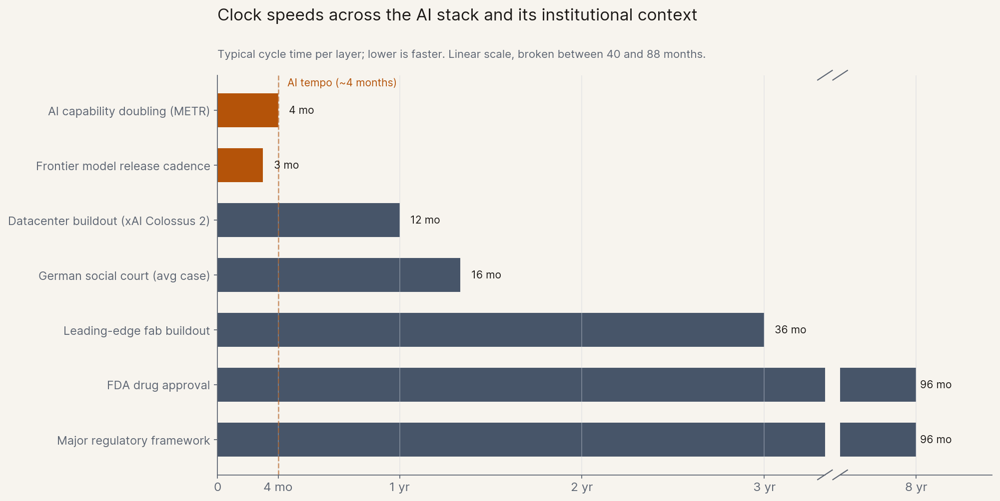
Was die langsamste Uhr ist, wechselt von Bereich zu Bereich. Der Rest dieses Artikels nennt beispielhaft drei davon: Chips auf der physischen Ebene, den Menschen als „Verifizierer“ und Institutionen und Gesetze, die große Auswirkungen auf alle anderen Bereiche haben und oftmals (aus gutem Grund) die langsamsten von allen sind. Beginnen wir mit der ersten und einfachsten:
3. Die Ära der Knappheit
Die Semiconductor-Supply Chain ist der sauberste Fall für das Prinzip der langsamsten Uhr und die physische Ebene von KI-induzierten Bottlenecks.
Die Wahrnehmung hat sich rasch gedreht. Anfang 2025 lautete die dominante (ökonomische) Frage zur Entwicklung von KI noch: „Ist die Nachfrage echt?“ Im April 2026 schrieb Derek Thompson dann, wir hätten uns „von einer Periode der Nachfrageknappheit (zu wenig Kunden) zu einer Periode der Angebotsknappheit (zu wenig Compute)“ hinbewegt.[5] Die Märkte preisen inzwischen nicht mehr ein, ob KI sich durchsetzen wird. Sie preisen ein, wem die Datacenter und GPUs gehören und wer den größten Profit aus der gigantischen Nachfrage ziehen kann.
Die einfachste Schicht ist der Chip selbst. Jeder führende KI-Chip des Jahres 2026 wird auf demselben fortgeschrittenen Fertigungsknoten bei TSMC produziert, und KI-Chips dürften 2027 den Großteil der Kapazitäten dieses Knotens beanspruchen. Smartphones und gewöhnliche CPUs spielen kaum noch eine Rolle.[6]
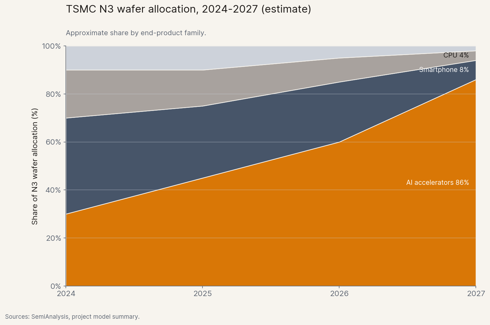
Bei Speicher und „Packaging“ zeigt sich dasselbe Muster in zugespitzter Form. Der spezielle Speicher, den jeder KI-Chip braucht, hat einen überproportionalen Anteil der gesamten DRAM-Kapazität verschlungen, und die koreanischen Exportpreise für Speicher sind beinahe senkrecht nach oben geschossen. Einzelne Kategorien kosten mittlerweile ein Mehrfaches des Vorjahrespreises.[7] Das fortgeschrittene „Packaging“, das quasi Logik und Speicher zu einem einzigen Chip verschmilzt, ist das größte Kapazitäts-Bottleneck im gesamten Stack. Und das geopolitische Bottleneck ist strukturell: Taiwan für die Chips, Korea für den Speicher.
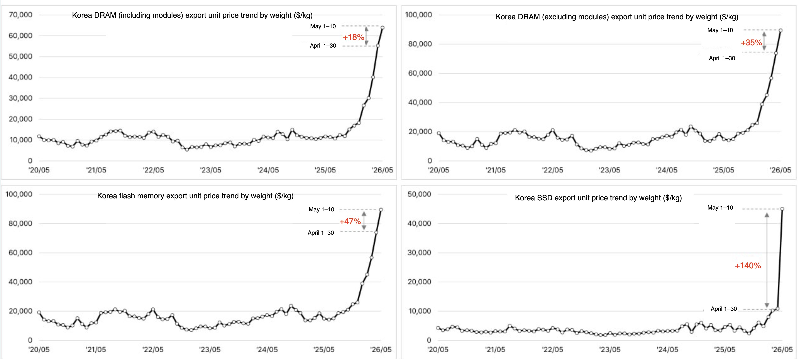
2026 hat sich eine neue Story aufgetan: Agenten brauchen ihren eigenen Computer. Jeder autonome Agent-Loop ist faktisch ein kleiner Server, der die Orchestrierung um verschiedene Modellaufrufe und „Tool-Calls“ herum erledigt. Und der CPU-Teil der Lieferkette ist in den Fokus der Nachfrage und der Investoren gerückt. AMD steht seit Jahresbeginn mit 343 Prozent im Plus, Intel mit 483 Prozent. Die Wall Street ist von „Nvidia oder nichts“ auf „jeden mit Kapazität“ rotiert.[8]
Im April 2026 wollten zwei große AWS-Kunden die gesamte AWS-Kapazität an Graviton-CPUs für 2026 erwerben. AWS lehnte ab. Trainium, die hauseigene AWS-Chipfamilie für KI-Training und -Inferenz und die Alternative zur Anmietung von NVIDIA-GPUs, zeigt dasselbe Bild: Trainium2 ist weitgehend ausverkauft, Trainium3 fast vollständig vergeben, und für Trainium4, das erst in 18 Monaten kommt, liegen bereits substanzielle Vorbestellungen vor. Microsoft-Finanzchefin Amy Hood erklärte auf der Q1-2026-Bilanztelefonkonferenz, die Kapazitätsengpässe würden das gesamte Geschäftsjahr überdauern.[9]
Wenn Intelligenz im Überfluss verfügbar wird, profitieren Akteure auf jeder Schicht, die nicht linear skalieren kann aber notwendig für das Gesamtsystem ist. Die öffentlichen Aktienmärkte haben das schneller eingepreist als die öffentliche Debatte. Und die größten Bottlenecks und Kursgewinner liegen in der Supply Chain weiter unterhalb der offensichtlichen KI-Chip-Giganten wie NVIDIA, TSMC und ASML.
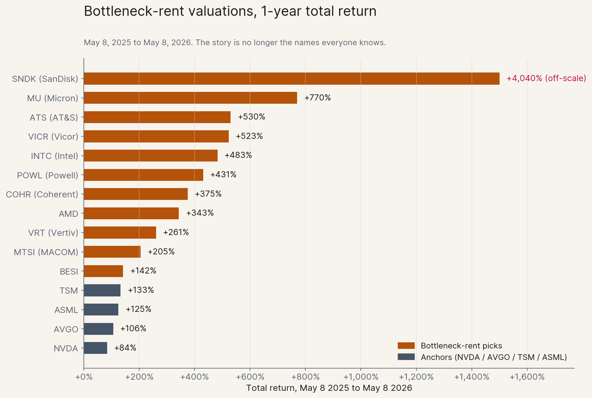
Und die Bottlenecks sind nicht statisch, sondern verlagern sich mit der Zeit. Das größte physische Bottleneck von gestern war Strom, der von heute sind Chips und Packaging, das von morgen wird vermutlich etwas ganz anderes sein. Wirtschaftliche Chancen wandern mit dem Bottleneck, und wer die Entwicklung als erstes antizipiert, macht enorme Profite.
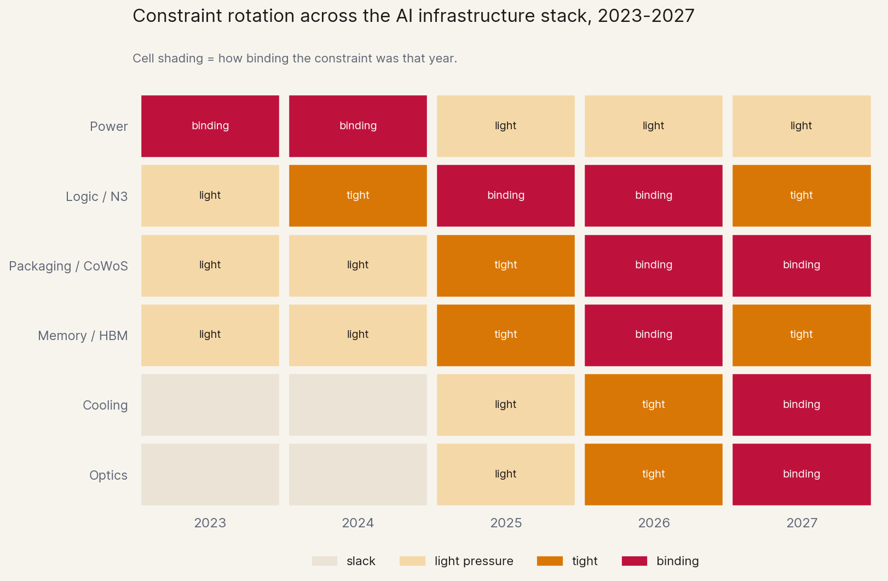
4. Die „Interface Tax“
Chips werden auf einem öffentlichen Markt gehandelt. Die zweite Schicht, die Kosten von Bottlenecks in Prozessen, die menschliche Verifikation benötigen, wird indirekt eingepreist: über Warteschlangen, Review-Stunden und Unterschriften. Nicht weniger real, nur schwerer in einem Chart darstellbar.
Die sauberste Formalisierung liefert ein aktuelles Paper von Christian Catalini und Mitautoren am MIT: Some Simple Economics of AGI (Februar 2026). Das Argument passt auf eine Briefmarke: Zwei Kostenkurven zählen: die Kosten, eine Aufgabe zu automatisieren (cA), die mit jeder Modellgeneration grob exponentiell fallen, und die Kosten, das Ergebnis zu verifizieren (cH), die durch menschliche Zeit, Aufmerksamkeit und physische Aspekte gedeckelt sind. cA stürzt ab; cH bewegt sich kaum. Die sich vergrößernde Kluft zwischen beiden nennt Catalini den Measurability Gap, und seine Konsequenz ist die These dieses Abschnitts: „Das größte Wachstumshindernis wird bald nicht länger Intelligenz sein, sondern die menschliche Verifikationsgeschwindigkeit.“
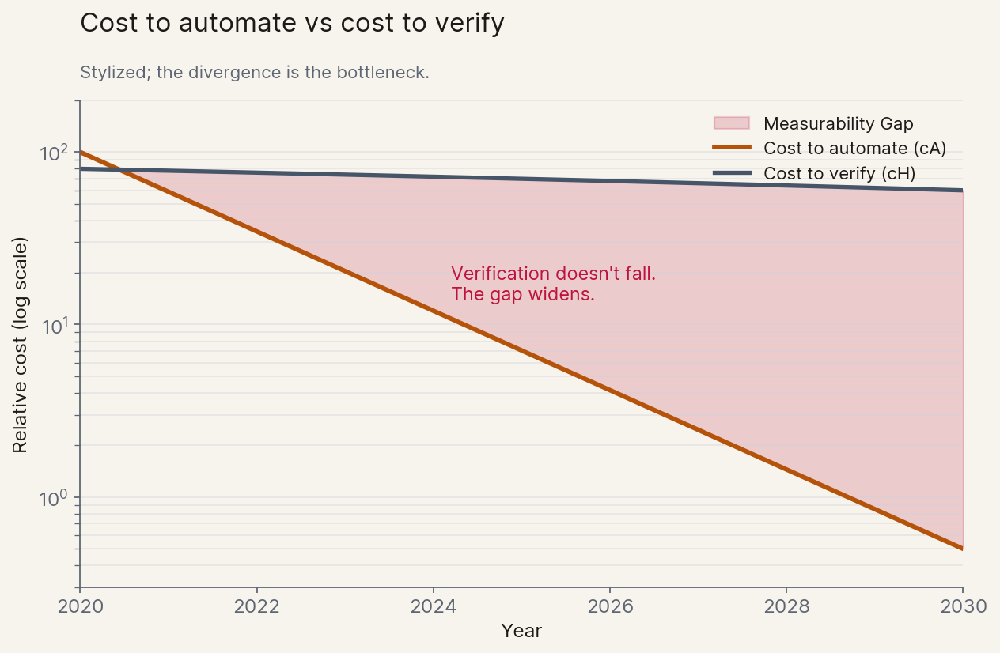
Eine der am wenigsten beachteten Zahlen des Jahres 2026 steht in der GDPval-Studie von OpenAI: Naiv betrachtet erledigt GPT-5 die komplexen Aufgaben des Benchmarks rund 90-mal schneller als ein menschlicher Experte. Rechnet man die menschliche Zeit ein, die nach wie vor für die Verifikation des Ergebnisses nötig ist (das Modell „einmal laufen lassen, dann nachbessern“), bleibt GPT-5 am Ende nur noch etwa 1,18-mal schneller als der Mensch allein. Der Verifikationsschritt kostet fast den gesamten Geschwindigkeitsvorteil.[10]
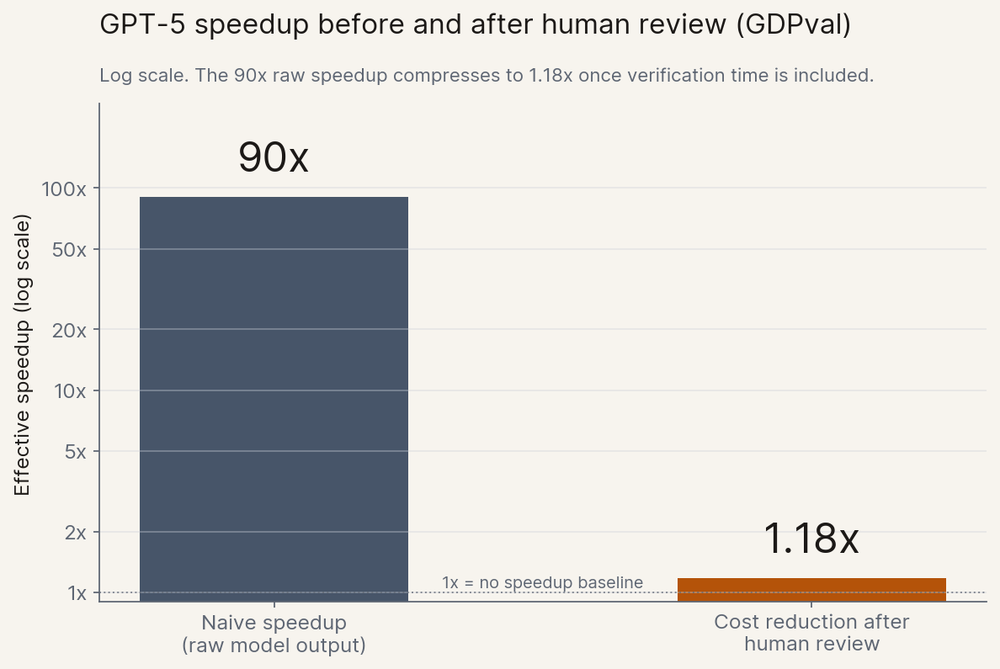
Es ist dasselbe Muster wie beim ellamind-Code-Review-Beispiel aus Abschnitt 1. Code-Review ist ein Verifikationstor, das nicht automatisch mitskaliert, wenn die KI-Seite skaliert. Das Modell schreibt schneller Code; die Geschwindigkeit der Reviewer kann nicht in gleichem Maße skalieren. Wer das Muster einmal sieht, erkennt es überall dort, wo KI-Beschleunigung auf menschliche Verifikation trifft.
Im Bankwesen schreibt das Vier-Augen-Prinzip zwei zugelassene Personen für jede kritische Handlung vor; vergleichbare Regeln binden die Pharmaproduktion, den Energiehandel, die öffentliche Beschaffung und Teile der hoheitlichen Entscheidungsfindung in den meisten Industriestaaten. Pharma führt Chargendokumentation, Laborbücher und die Source-Data-Verifikation klinischer Studien über menschliche Unterschriften nach FDA Part 11 und EU GMP. Ob Kreditentscheidung, klinische Chargenfreigabe, Vorstandsbeschluss, Vertragsprüfung, Patentverfahren oder das Release eines neuen Modells: Das Bottleneck ist immer dasselbe: Die Unterschrift einer Person, die persönlich haftet. Viele Kunden von ellamind sind genau von diesen Bottlenecks betroffen, und ein großer Teil unserer Arbeit besteht vereinfacht gesagt darin, die Geschwindigkeit auf der Verifikationsseite zu erhöhen.
Catalini gibt dem Phänomen einen passenden Namen: die Trojan-Horse-Externalität. Unverifizierter KI-Output verbraucht stromabwärts reale Ressourcen: Verfahrensgebühren, Gerichtszeit, Aufmerksamkeit der Prüfer, Fehler, die sich zu echtem Schaden auswachsen. Das Sozialgerichts-Beispiel aus Abschnitt 1 ist der simpelste Fall: billig zu erzeugen, teuer zu absorbieren. Die Kosten der Produktion liegen beim Produzenten; die Kosten der Verifikation durch Richter, Aufsichtsbehörden und Reviewer werden sozialisiert. Innerhalb eines Software-Unternehmens zeigen sich diese Kosten noch relativ harmlos als Review-Warteschlange; eine Stufe weiter entscheidet dieselbe Dynamik darüber, ob ganze Institutionen mit der Technologie, die uns bevorsteht, noch Schritt halten können.
5. Die institutionellen Uhren
Betrachten wir die Arzneimittelentwicklung als einfaches Beispiel. Hierzu hat Anthropic ein Paper veröffentlicht: Steigert KI die Rate pharmazeutischer Ideen um den Faktor zehn, wird die relevante Restriktion die Geschwindigkeit der Arzneimittel-Zulassung, nicht die Geschwindigkeit der Wirkstoff-Entdeckung. Die FDA-Kapazität kann sich nicht in vier Monaten verdoppeln; von Phase I bis zur Zulassung verstreicht noch immer etwa ein Jahrzehnt. Der größte Teil der neuen Medikamente, die KI-beschleunigtes Research findet, wird erstmal in einer endlosen Verifikations-Warteschlange landen. Die langsamste Uhr gibt den Takt des Systems vor.
Die deutsche Sozialgerichts-Geschichte aus Abschnitt 1 ist keine regionale Kuriosität, sondern ein erstes Indiz der neuen Normalität. KI drückt die Grenzkosten der Produktion juristischer Texte, von Klageschriften, Schriftsätzen, Berufungen, gegen null. Gerichte skalieren nicht: Richter, Anhörungsbeamte und Geschäftsstellen sind an menschliche Bandbreite gebunden, und zusätzliche Kapazität verlangt Gesetzgebung, Ausbildung und physische Räume – über lange Jahre hinweg. Das Ergebnis ist eine Verfahrensdauer, die immer weiter ansteigt, und sie ist eine eigene Form des Scheiterns. „Justice delayed is justice denied“ – verzögertes Recht ist verweigertes Recht. Und noch einmal: Agenten, die in einer einzigen Sitzung Dutzende Klagen vorbereiten können, gibt es schon jetzt – aber sie sind in der Breite noch gar nicht angekommen. Sobald jeder diese Tools nutzt, wird das eine weitere Vervielfachung der Eingaben zur Folge haben. Bei immer noch derselben Zahl von Richtern.
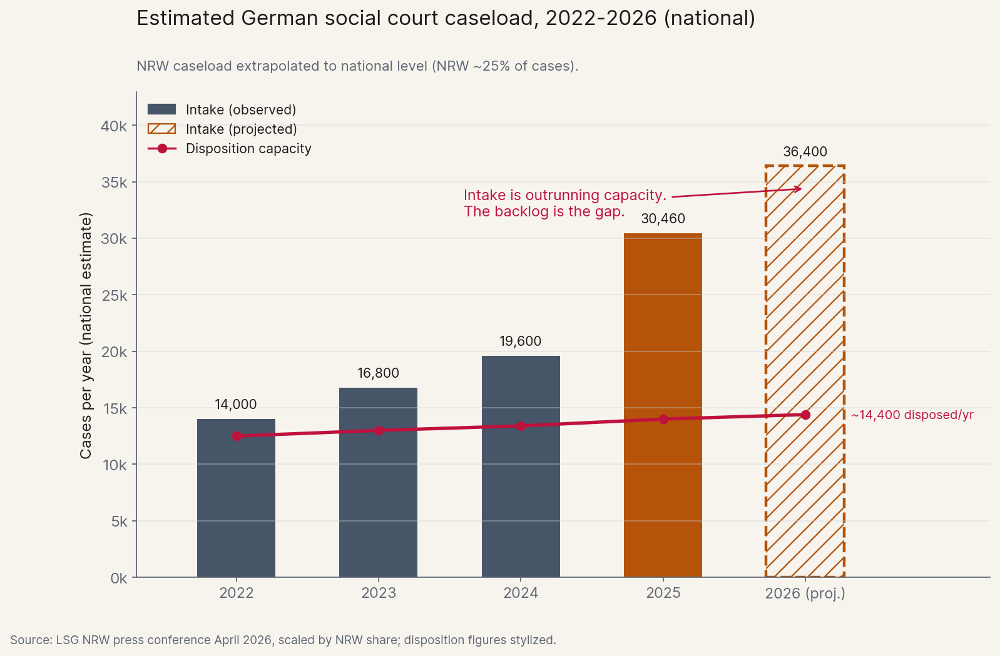
Regulierungs- und Standardisierungsinstanzen stehen vor demselben Problem. Die Durchsetzung des EU AI Act ist über 2025 bis 2027 gestaffelt; die BaFin, Deutschlands Finanzaufsicht, betreibt Konsultationen in Jahreszyklen; FDA und SEC operieren auf vergleichbaren legislativen Zeitskalen. Der langsame Zyklus ist das, wozu diese Institutionen da sind; sie sind auf sorgfältige und behutsame Arbeit angelegt. Doch bei einer Fähigkeits-Verdopplung im Vier-Monats-Takt ist dieser Modus Operandi von völliger Abwesenheit nicht mehr groß zu unterscheiden. Die Geschwindigkeit der Veränderung erzeugt einen dauerhaften regulatorischen Rückstand, der unsichere Alternativen (wie z.B. private Arbitration statt gerichtliche Klärung) oder sogar eine Umgehung der Regeln und Gesetze fördert.
Kurz gesagt: Institutionen sind auf das langsamste, bedächtigste menschliche Tempo zugeschnitten. Die KI-Entwicklung wird sich nicht verlangsamen, um Institutionen die Chance zu geben, mitzuhalten. Betroffenen Institutionen bleibt nur die Option, ebenfalls schneller zu werden, bevor sie entweder umgangen werden, oder unter dem Druck eines stetig wachsenden Backlogs zusammenbrechen.[11]
Keine der letzten beiden Optionen verlangt, dass eine Institution formal den Betrieb einstellt. Stellen Sie sich vor, die Wartezeit am Sozialgericht steigt auf drei Jahre (ein realistisches Szenario, wenn die Eingänge weiter mit 55 Prozent jährlich wachsen). Wenn die Wartezeit auf Rechtsprechung unerträglich wird, existiert die Institution nur noch auf dem Papier. Anderswo gilt dasselbe: Eine FDA, deren Zulassungsprozess ein Jahrzehnt dauert, nimmt bei einem explosionsartigen Anstieg von vielversprechenden Medikamenten de facto viele vermeidbare Tode in Kauf; eine Aufsichtsbehörde, deren Konsultationszyklen der Technologie zwei Jahre hinterherlaufen, ist gemessen in KI-Geschwindigkeit faktisch abwesend. Die Wahl zwischen dem „schneller werden“, „umgangen werden“ oder „zusammenbrechen“ wird zu einer politischen Frage; und der Preis einer Fehlentscheidung ist, dass die Institution aufhört das zu leisten, was Bürger, Patienten oder Märkte von ihr brauchen.
6. Was das bedeutet
Drei Beispiele, ein Muster. Was folgt aus dem Fokus auf Bottlenecks?
6.1 Disruption ist asymmetrisch
Die Standard-Story „KI nimmt Jobs“ sagt Disruption innerhalb KI-nativer Arbeitsabläufe voraus. Bottleneck-Denken sagt Disruption an den Schnittstellen zwischen KI-beschleunigten und klassischen Arbeitsabläufen voraus. Der Arzt, der die Radiologie-KI-Befunde abzeichnet. Der Richter, der KI-generierte Klagen liest. Der Compliance-Verantwortliche, der KI-entworfene Verträge prüft. Der Manager, der KI-geschriebene Leistungsbeurteilungen bewertet. Der Code-Reviewer, der KI-geschriebenen Code-Beiträgen vertrauen soll. Diese Rollen intensivieren sich, sie verschwinden nicht; die Menschen darin fühlen sich – zumindest temporär – eher überlastet als überflüssig.
Ethan Mollick argumentiert in eine ähnliche Richtung. In The Shape of AI: Jaggedness, Bottlenecks and Salients (Dezember 2025) schreibt er, KI-Fähigkeiten rückten entlang einer „Jagged Frontier“ voran. Die sichtbare Veränderung ist gerade deshalb so ungleichmäßig, weil das Bottleneck-Prinzip am Werk ist. Die notwendige Intelligenz ist in vielen Fällen längst vorhanden. Entscheidend sind Restriktion und Verifikation.
6.2 Was das für Politik und Nicht-Tech-Berufe bedeutet
Drei konkrete Thesen, formuliert für Leser, die nicht aus der Tech-Branche kommen:
Erstens: Regulatorische Geschwindigkeit und Anpassungsfähigkeit werden zu einem strategischen nationalen Asset. Ein Land mit schnellen Gerichten, kompetenten und reaktionsschnellen Aufsichtsbehörden, reichlich Chip-Kapazität und einem belastbaren Stromnetz kann vom KI-Mehrwert besser profitieren als eines, das diese Stärken nicht hat. Das stellt jahrzehntelange politische Intuition auf den Kopf. Investitionen in administrative Anpassungsfähigkeit, Justizkapazitäten, Reformen der Genehmigungsverfahren und Netzausbau sind heute KI-Wirtschaftspolitik, auch wenn niemand dieses Etikett darauf klebt. Aus diesem Licht betrachtet ist das Sozialgerichts-Beispiel aus Abschnitt 1 ein industriepolitischer Weckruf.
Eine wichtige Folge daraus: Institutionen müssen selbst KI einsetzen, wenn sie ihre eigenen Bottlenecks und Warteschlangen überleben wollen. Der Ausweg aus dem Sozialgerichts-Rückstau ist nicht nur, mehr Personal einzustellen. Er besteht darin, geringfügige, hochvolumige Fälle von KI zu triagieren und vorentscheiden zu lassen und menschliche Richter auf die schwierigen Fälle zu konzentrieren. Im Bezug auf Code Reviews, wo die Implikationen natürlich deutlich harmloser sind, tun wir bereits etwas Analoges bei ellamind: Kleinere, risikoarme Pull Requests werden end-to-end von einem automatisierten KI-Reviewer geprüft und durchgewunken; Menschen kommen erst bei größeren oder sicherheitsrelevanten Änderungen ins Spiel, wenn die Folgen eines Fehlers gravierender wären. Die Leitplanken sind dabei extrem wichtig, das Design muss „fail safe“ sein und sorgfältig getestet werden. Doch die Alternative, die Verifikation vollständig menschlich zu halten, während die Produzentenseite 100-fach skaliert, ist keine gangbare Alternative.
Zweitens: Politische Kämpfe könnten sich zunehmend zur Frage „Wer bekommt den Slot?“ verschieben. Wer die Bottlenecks kontrolliert, kann enorme Profite erzielen. Durchsatz von FDA-Zulassungen, Gerichtszeit, TSMC-N3-Waferkapazität, Stromgenehmigungen, Bauarbeiter. Einige der politischen Fronten des kommenden Jahrzehnts könnten heißen: Reform der Genehmigungsverfahren, Justizbudgets, Personalstärke der Aufsichtsbehörden, Wartelisten beim Netzanschluss. Das sind technisch klingende und wenig populäre Investitionen und Eingriffe; jedoch mit gewaltigen verteilungspolitischen Folgen. Die AWS-ausverkauft-Geschichte aus Abschnitt 3 ist das, wonach diese Bottleneck-Fronten aussehen, bevor sie die breite Öffentlichkeit erreichen.
Drittens, und an Nicht-Tech-Berufe gerichtet: Die Frage lautet nicht unbedingt „Kann die KI meinen Job ersetzen?“, sondern „Bin ich der Verifizierer in meinem Workflow?“. Lautet die Antwort ja (Arzt, Richter, Manager, Reviewer, Compliance-Verantwortlicher, bestimmte Lehr- und Operations-Rollen), dann erwartet Sie mehr Arbeit, nicht weniger. Die Rolle verschiebt sich zu Urteil und Verantwortung, wie in Abschnitt 4 gezeigt. Für die Produzenten von Text, Code, Designs oder Analysen, bei denen am Ende jedoch jemand anderes unterschreibt und die Verantwortung übernimmt, ist Kommodifizierung jedoch eine valide Befürchtung. Der Wert fließt zu dem, der die Verantwortung für das Ergebnis übernimmt. Die in der aktuellen Berichterstattung am stärksten unterschätzten Berufsgruppen sind das mittlere Management und Operations. Diese Berufsbilder existieren gerade deshalb, weil sie die Verifikationsschicht für alle unter ihnen sind. Sie sind im Begriff, deutlich wichtiger zu werden.
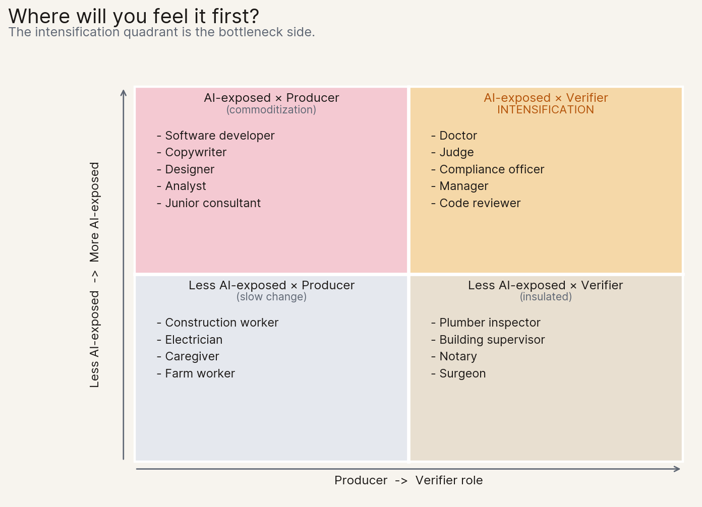
6.3 Werkzeuge für eine Bottleneck-Analyse
Werkzeug 1: Der Drei-Fragen-Test. Fragen Sie bei jedem Workflow, Prozess oder Sektor, der Sie interessiert:
- Was beschleunigt KI hier um den Faktor zehn?
- Welcher Schritt wird nicht um den Faktor zehn beschleunigt?
- Ist dieser nicht-beschleunigte Schritt ein Mensch, eine Institution oder eine physische Ressource?
Die Antwort auf Frage (3) sagt Ihnen, ob Sie es mit einem Schnittstellen-, einem institutionellen oder einem physischen Bottleneck zu tun haben. Und das sagt Ihnen, wie sich die Disruption anfühlen wird oder wo Profite anfallen werden. Für ein Krankenhaus oder eine Chipfabrik wird man zu sehr unterschiedlichen Antworten kommen; beide sind diagnostisch wertvoll.
Werkzeug 2: Die Karte der Bottleneck-Rotation. Bottlenecks wandern. Gestern war es der Strom, heute sind es TSMC N3 und CoWoS, morgen vielleicht der Netzanschluss, heute die Anzahl der Richter und morgen der Gerichtsterminkalender und die Raumverfügbarkeit. Der Fehler besteht darin, Engpässe als statisch wahrzunehmen und die Rotation zu übersehen. Praktische Heuristik: Wenn ein Bottleneck zum Konsens wird, ist die bindende Restriktion meist schon eine Schicht weiter Prozess-abwärts gewandert. Das gilt für physische Engpässe und ebenso für institutionelle.
Werkzeug 3: Persönliche Positionierung. Investitionen in Verifikations-Fähigkeiten (Urteil, Geschmack, Verantwortung, Fachexpertise) sind wertvoller als in Produktions-Fähigkeiten (Schreiben, Programmieren, Gestalten, grundlegende Analyse). Die erste Fähigkeiten-Gruppe bestimmt die Gesamtgeschwindigkeit und gewinnt an Wert. Die zweite ist die Seite, die von der KI komprimiert wird. Das ist eine generelle Tendenz und betrifft nicht jeden Bereich identisch; die konkreten Fähigkeiten hängen von der Domäne ab. Aber die Richtung ist eindeutig.
Schluss
Ich bin inzwischen seit Jahren in der KI-Szene unterwegs. Ich erlebe hautnah, was KI-Modelle und -Agenten Tag für Tag leisten, und ich bin immer noch überrascht von der Geschwindigkeit, mit der die Modelle und mit ihnen die „Produktions-Fähigkeiten“ besser werden. Hält die Kurve, wie Anthropic und OpenAI inzwischen offen wetten, und kommt die automatisierte KI-Forschung in rund zwei Jahren an, dann verschiebt sich die dominante Frage der späten 2020er Jahre. Sie lautet nicht mehr, ob die Genies im Rechenzentrum eintreffen, sondern wie gut wir die Bottlenecks handhaben, die sich bei ihrem Eintreffen auftun werden.
Die langsamste Uhr ist selten der Ort, der im Fokus der Aufmerksamkeit steht. Sie ist der Ort der geduldigen, langwierigen und konzentrierten Arbeit. Dort werden in den kommenden zehn Jahren die leisesten Vermögen verdient. Und die entscheidenden gesellschaftlichen und wirtschaftlichen Fragen entschieden.